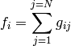
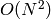
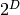
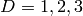
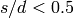
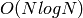
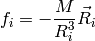
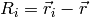
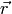
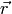

Tree methods for sumations¶
One of the most common numerical tasks in problems involving the simulation of dynamical processes in N-body systems is the computation of large number of summations with the form:

One example is the computation of a long-range force exerted on a particle by the rest of particles in a given physical system.
To compute the evolution of that kind of systems  computations
of the  terms are required and with a large value of
terms are required and with a large value of  the
computational cost is huge.
the
computational cost is huge.
One of the most clever solution of this problem is the so-called
tree-method for summation. In that method the value of
corresponding to distant particles are summed up by constructing a
hierarchical structure of nested cells (tree).
The tree is constructed using the following procedure:
- Divide the initial volume in  equal regions ( is the number of space dimensions of the problem)
- Compute the physical properties of each cell: total mass or total charge, gravitational or electrical multipole momenta, etc.
- Store the geometrical paramters of each cell: center of mass or charge, dimensions, position of its vertices.
- Store a list of the particles contained on each cell.
- Tag the cell with an identification number.
- Store the tags of the father cell (0 for the original volume) and a list of the tags of the child cells if there is any (see next step).
- Repeat 1-6 for every child cell that contains more than 1 particle.
The summation for each particle is performed in the following way:
- Loop on the tree starting in the highest level (tag 1, 2, ... skip the 0 level)
- For each cell compute the distance from the centroid to the particle (d).
- If , where
 is the size of the cell compute the force
exerted by the whole cell on the particle.
is the size of the cell compute the force
exerted by the whole cell on the particle. - Else descend on the child cells and repeat from step 2.
At the end the computation of all the summations for the particles
is performed in  instead of the original .
Write a python script to compute the gravitational force on each particle of a system composed by N randomly distributed particles in a 1D line and using a tree-method to compute the summation.
The specific gravitational force on particle i exerted by another particle is given by:

Where ,  and  is the mass
parameter and position of the other particle.
and  is the mass
parameter and position of the other particle.
- Bonus: Compare the time required to perform the operation using
- the direct summation and the tree mathod.
Bonus: Write the program to perform the summation in 2 and 3D.